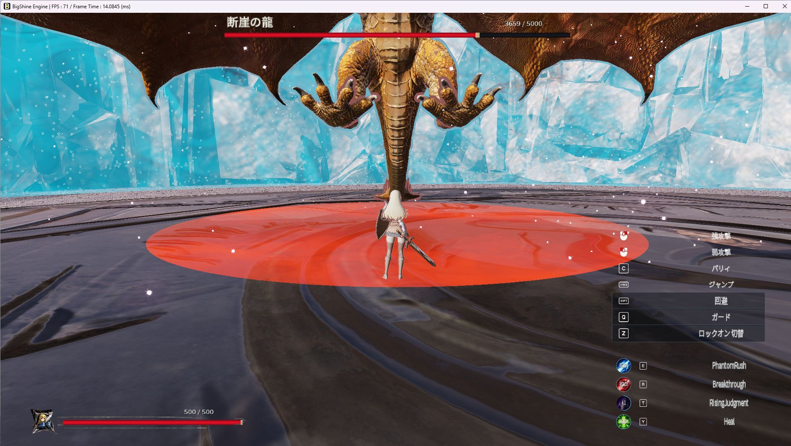
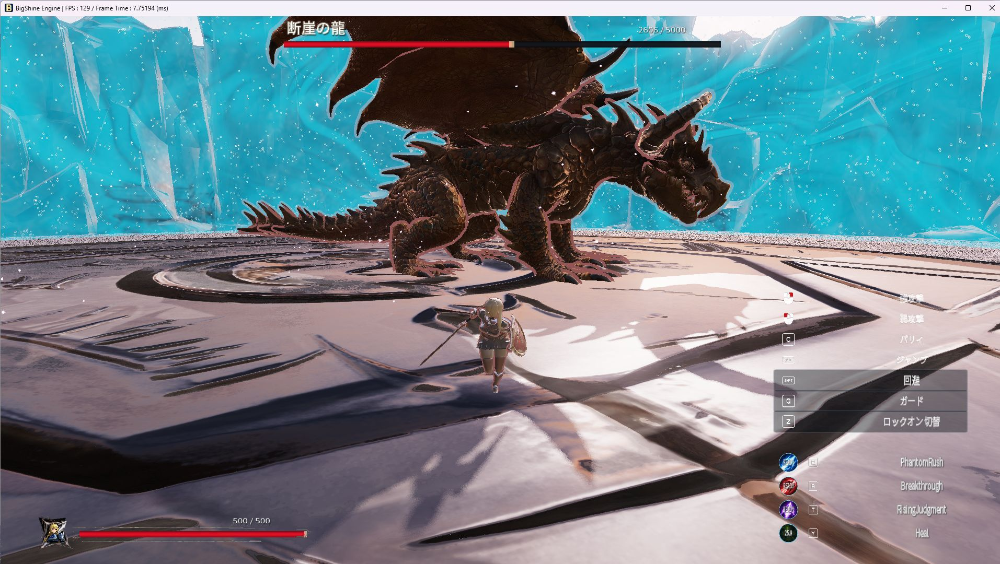
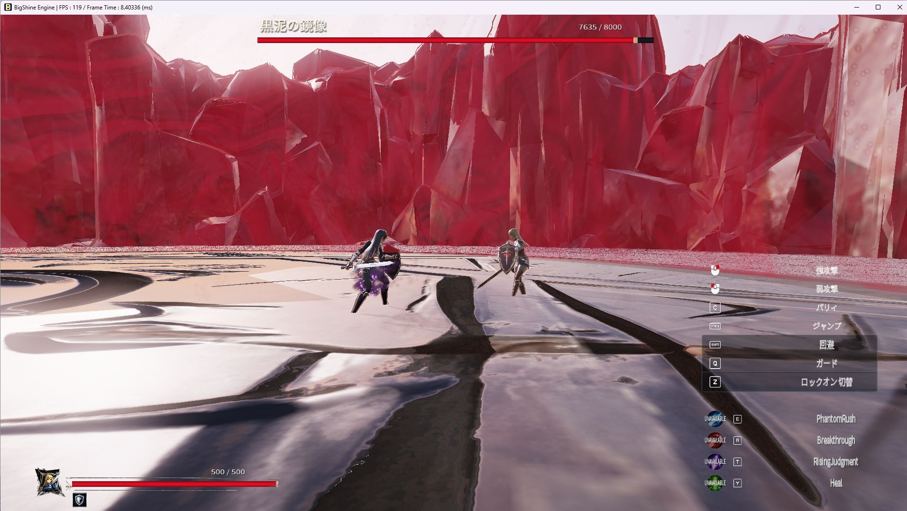
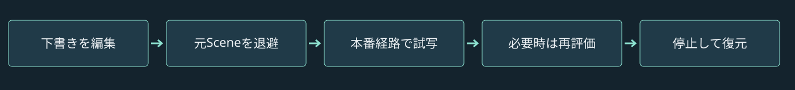

第1形態｜ドラゴン

噛みつき、尻尾の薙ぎ払い、ブレスなどを使う大型のボスです。距離と正面・側面・背後・胴体の下といった位置関係を判断に使います。
— 忌まわしき影 —
敵の攻撃を見極め、ジャストガード・ジャスト回避から反撃へつなぎます。C++とDirectX 11を使った自作フレームワークで開発しています。

| 項目 | 内容 |
|---|---|
| ジャンル | 1対1のボスバトルアクション |
| 制作人数 | ［要入力］ |
| 制作期間 | ［要入力：開始年月～現在］ |
| 言語・描画API | C++／HLSL／DirectX 11 |
| 開発環境 | Visual Studio 2022対応プロジェクト |
| 制作基盤 | 自作フレームワーク BigShine |
| 対応環境・操作機器 | ［要入力：配布版で確認したWindows環境と対応入力］ |
| 現在の状態 | 開発中。戦闘と制作支援機能を実装し、調整・検証を進めている段階 |
担当範囲
フレームワーク、ゲームプレイ機能、敵AI、アニメーション連携、制作支援Editorなど、プログラムの大部分を自作しています。一部のシェーダーにはAI生成コードを利用した箇所があります。モデル・アニメーション・音声などの素材は、プログラムの実装と区別して使用元を記載します。
目指しているのは、攻撃ボタンを押し続けるだけでなく、敵の動きを見て防御や回避を選び、その成功から攻めへ切り替える戦闘です。
ジャストガード・ジャスト回避が成功すると、一定時間、通常の攻撃入力を反撃へ切り替えます。成功前に予約した攻撃入力も反撃として扱う仕組みを用意し、防御の成功と次の操作をつないでいます。

噛みつき、尻尾の薙ぎ払い、ブレスなどを使う大型のボスです。距離と正面・側面・背後・胴体の下といった位置関係を判断に使います。

プレイヤーの攻撃やガード・回避の傾向を参照し、攻め、防御、間合いの調整などの行動目的を選ぶ構成です。
先行入力を保存する区間と、行動を切り替える受付を分け、アニメーションと遷移表で調整します。
仕組みと比較素材を見る →スキルの段ごとに補正区間と上限を指定。予定RootMotionと対象の停止距離から移動を補正します。
仕組みと比較素材を見る →観測と履歴から行動目的を選び、グラフの条件と重みに反映。反応待ちと防御のコストを調整します。
仕組みと比較素材を見る →登録したActionの時刻を編集し、本番と同じ経路で試写。停止時は試写前のSceneへ戻します。

移動の補正を重ねすぎないために
スキルには、モーションに含まれる移動と、段ごとの突進速度があります。そこで、突進速度を持つ段の標準MotionWarp設定では位置補正を無効にし、同じ段で接近移動が重複しないようにしています。補正の開始だけでなく、段の切り替わりや中断時に要求を止める処理も用意しています。
試写による変更を、編集Sceneへ混ぜないために
演出の試写ではオブジェクトやマテリアルの状態が変化します。試写開始前のSceneをメモリへ退避し、停止後に既存の復元処理へ戻すことで、演出を確認する状態と編集を続ける状態を分けています。
現在の開発状況
プレイヤーの入力受付と反撃への接続、攻撃移動の補正、ドラゴン・人型ボスの行動制御、演出の編集・試写機能を実装しています。現在は、これらの戦闘バランスと演出の調整を進めています。
次に確認すること
同じ条件での移動補正ON／OFF、入力受付区間ごとの動作、ボスの判断表示と実際の行動、試写停止後のScene復元を確認し、比較映像とともに開発進捗へ掲載します。
使用技術・外部ライブラリ
C++、HLSL、DirectX 11、Dear ImGui、imgui-node-editor、nlohmann/json、Tracyなどを利用しています。DirectX 11は描画API、Dear ImGuiとimgui-node-editorは編集UI、nlohmann/jsonはデータの保存・読み込み、Tracyは処理計測に利用しています。その上でゲーム固有の制御や編集・試写の処理を実装しています。
制作・素材クレジット
プログラム：桃田 大輝（大部分を自作）
AI利用：一部のシェーダーでAI生成コードを利用。対象・利用範囲：［要入力：Fade／Glass関連など、実際に確認した対象］
モデル・アニメーション：［要入力：素材名、制作者、入手元、利用条件］
画像・テクスチャ・フォント：［要入力］
音楽・効果音：［要入力］
その他の基盤・参考実装：［要入力：利用している場合の出典と範囲］
体験版：［要入力：配布URL、版、操作説明、動作環境］
ソースコード：［要入力：公開可能なリポジトリまたは担当箇所の説明］